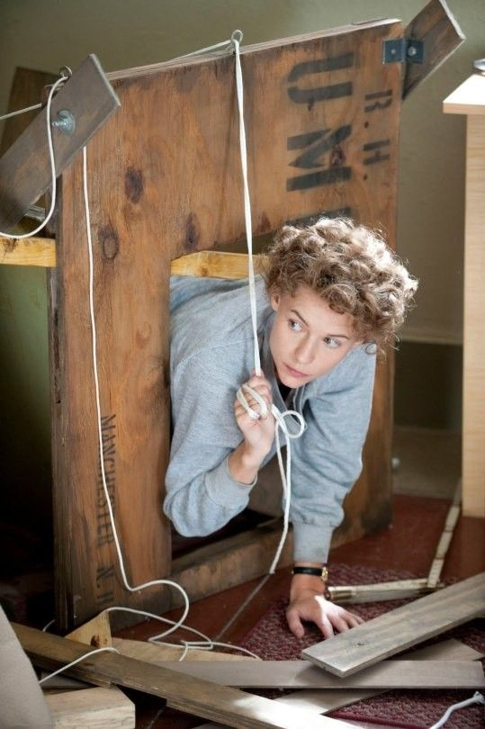
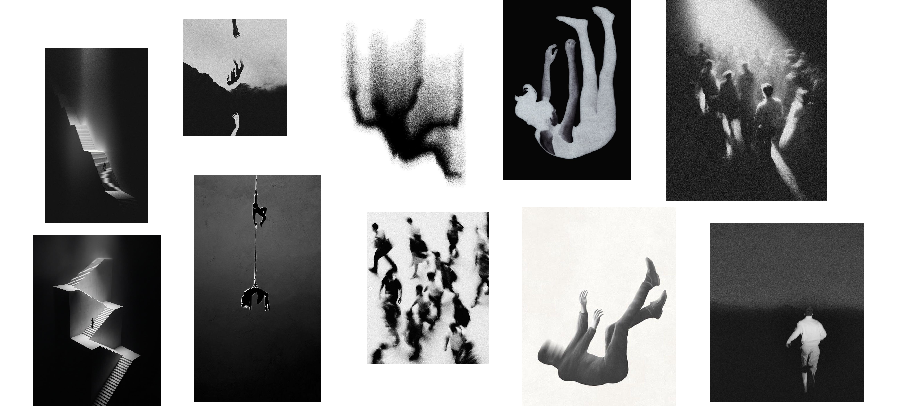
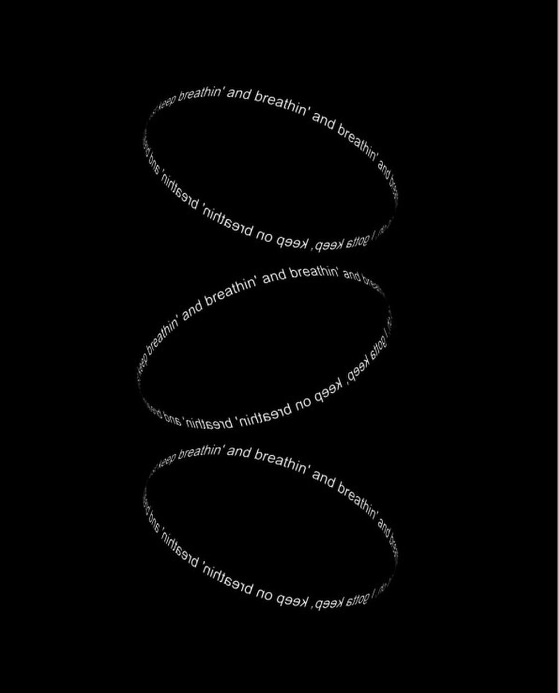
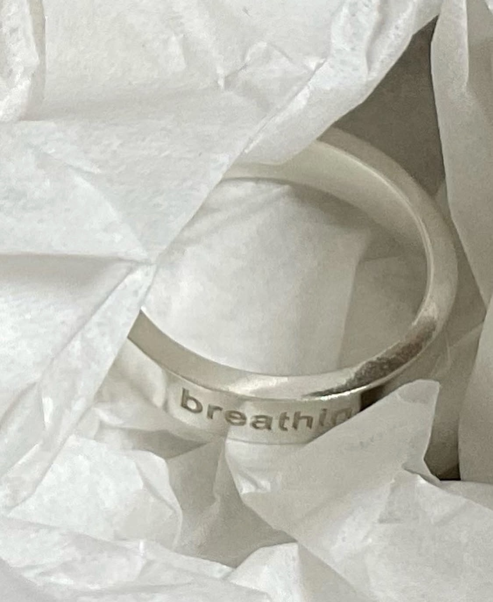
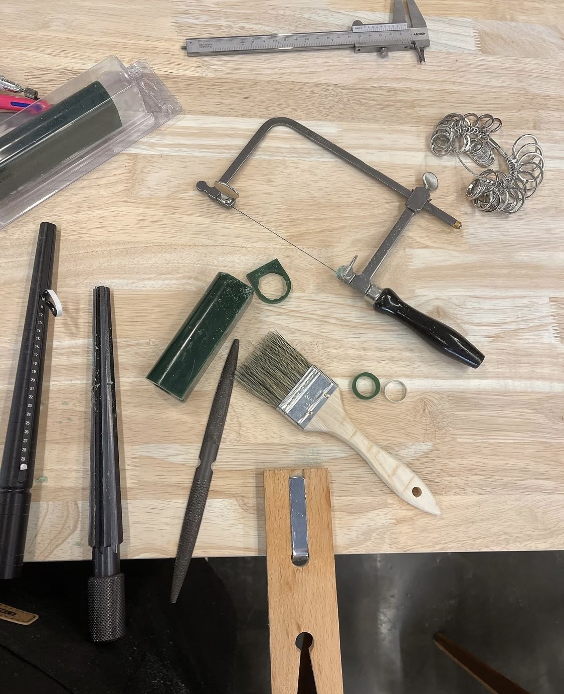

다시, 숨Breathin
공황장애를 설명하는 캠페인이 아니라, 이걸 너무 터부시하지 않도록 만들고 싶었습니다.
먼저 AI 없이 직접 비주얼 컨셉을 시각화한 포스터를 만들고 반지를 제작한 후, 패키지 디자인은 AI로 완성했습니다.
Rather than a campaign explaining panic disorder, I wanted to help make it feel less taboo.
I first hand-designed a poster visualizing the concept without AI, made the real physical ring, and then used AI to design the packaging.
배경Background
말하지 못하는 흔한 증상
A common symptom that goes unspoken
공황장애는 생각보다 흔한 증상이지만, 여전히 사람들은 쉽게 말하지 못한다.
Panic disorder is more common than people think, yet it's still something most people find hard to talk about.
대부분의 캠페인은 '당신은 혼자가 아니에요', '응원합니다' 같은 메시지를 전달하는 데 머무른다.
Most campaigns stop at delivering messages like "you are not alone" or "we support you."
하지만 그런 방식만으로는 사람들의 인식이 크게 바뀌지 않는다고 생각했다.
But that approach couldn't meaningfully shift how people perceive it.
그래서 캠페인이 아니라, 사람들이 일상에서 자연스럽게 사용하는 하나의 오브젝트를 만들기로 했다.
So instead of a campaign, I decided to make an object people could naturally use in their everyday lives.
영감Inspiration

Breathin 반지는 템플 그랜딘(Temple Grandin)의 Hug Machine에서 영감을 받았다. 몸에 일정한 압력을 가하면 긴장이 완화될 수 있다는 아이디어를, 거대한 장치가 아닌 가장 작고 일상적인 오브젝트로 재해석하고 싶었다. 그래서 불안이 찾아오는 순간 손으로 자연스럽게 감싸 쥘 수 있는 반지를 디자인했다. 반지를 쥐는 작은 행동이 자신의 감각과 호흡으로 다시 집중할 수 있는 하나의 인터랙션이 되기를 의도했다.
The Breathin ring was inspired by Temple Grandin's Hug Machine. I wanted to take the idea that applying steady, even pressure to the body can ease tension, and reinterpret it, not as a large machine, but as the smallest, most everyday object. So I designed a ring that can be wrapped and held naturally in the hand the moment anxiety arrives. The small act of holding it was meant to become an interaction that brings attention back to one's own senses and breath.
비주얼 디자인Visual Design
공황의 경험을 시각화하다
Visualizing the experience of panic
무드보드Mood Board

키워드: 가빠지는 숨 · 빨라지는 심장박동 · 과호흡 · 좁아지는 공간의 감각 · 그레인이 도는 거친 질감.
Keywords: a quickening breath · a racing heart · hyperventilation · a space closing in · a grainy texture.
먼저 공황 발작이 일어날 때의 호흡, 압박감, 불안의 흐름을 시각적으로 분석해 일러스트 언어를 만들었고, 이를 바탕으로 제품의 전체 비주얼 컨셉을 디자인했다.
I first visually analyzed the breathing, pressure, and flow of anxiety that occur during a panic attack to develop an illustrated visual language, then designed the product's overall visual concept on top of it.
결과물The Result
붙잡을 수 있는 작은 도구
A small thing to hold onto
Breathin이라는 반지는 불안을 없애는 제품이 아니라, 증상이 찾아왔을 때 스스로를 붙잡을 수 있는 작은 도구다. 실제로 불안이 심할 때 몸을 단단히 감싸거나 압박하는 행동이 안정감을 주는 경우가 있다는 점에서 착안해, 손으로 자연스럽게 쥐고 감각에 집중할 수 있는 형태를 만들었다.
Breathin, the ring, isn't a product that eliminates anxiety, but a small tool to hold onto when symptoms arrive. Drawing on the fact that firmly wrapping or pressing the body can bring a sense of stability during intense anxiety, I designed a form that sits naturally in the hand, letting attention settle into that sensation.

Adobe Photoshop으로 제작Designed by Adobe Photoshop

AI로 제작Designed by AI
타이포그래피Typography
반지에는 흰색 타이포그래피로 'Breathin'이라는 문장이 반복적으로 새겨져 있다. 사용자가 의식적으로 읽지 않아도, 손끝에서 시선이 머무를 때마다 스스로에게 호흡을 상기시키는 장치가 되도록 했다. 검은색과 흰색만 사용한 이유도, 감정을 과하게 표현하기보다 차분하게 자신의 호흡에 집중할 수 있는 분위기를 만들기 위해서였다.
The word "Breathin" is engraved repeatedly around the ring in white typography. Even without consciously reading it, the idea is that it quietly reminds the wearer to breathe whenever their eyes happen to land on it. The choice to use only black and white was also deliberate, to create a calm atmosphere that centers attention on one's own breathing rather than expressing emotion too loudly.
제작 과정Making Process
직접 손으로 프로토타입을 만들어보며 형태와 무게감을 확인했다.
I made the ring myself by hand, checking details like its thickness and the engraved lettering.


제품Product

과호흡이 찾아올 때 사용하는 종이봉투 호흡법에서 영감을 받아, 실용적이면서도 감각적인 형태로 만들었다.
Inspired by the paper-bag breathing method used during hyperventilation, I designed it to be both practical and sensory.

패키지Packaging
구매 이후로도 이어지는 경험
An experience that continues after purchase
패키지 역시 제품 경험의 일부로 디자인했다. 과호흡 상황에서 실제로 사용할 수 있는 종이 호흡백을 패키지 안에 포함시켜, 구매 순간이 끝이 아니라 필요한 순간까지 이어지는 경험으로 확장했다.
The packaging was designed as part of the product experience too. A paper breathing bag that can actually be used during hyperventilation is included inside, extending the experience beyond the moment of purchase to the moment it's actually needed.
결국 이 프로젝트는 공황장애를 설명하는 캠페인이 아니라, 사람들의 인식을 일상 속 제품 경험으로 바꾸려는 시도였다. 증상을 숨겨야 하는 대상이 아니라, 누구나 자연스럽게 사용할 수 있는 디자인 오브젝트로 재해석하는 것이 이 프로젝트의 목표였다.
In the end, this project wasn't a campaign explaining panic disorder, but an attempt to shift perception through an everyday product experience. The goal was to reinterpret the symptom, not as something to hide, but as a design object anyone could use naturally.